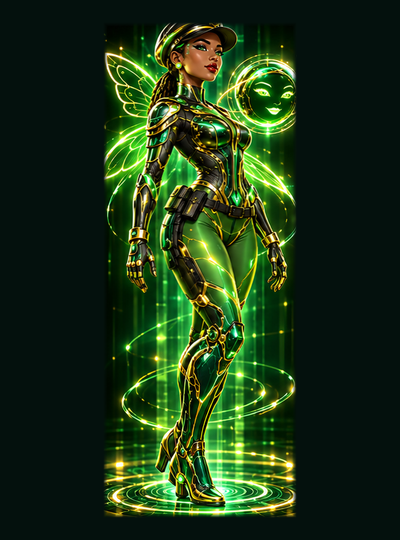

Character Form
Idle
Holly Conversation
Holly: Welcome to Interface OS Green. This is the local interactive design preview.
Animation and conversation are local demos. Listening and speaking previews run without microphone input or AI responses.
Camera & Microphone
Camera off · Microphone off